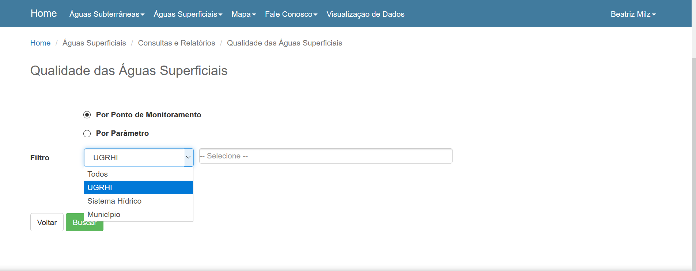
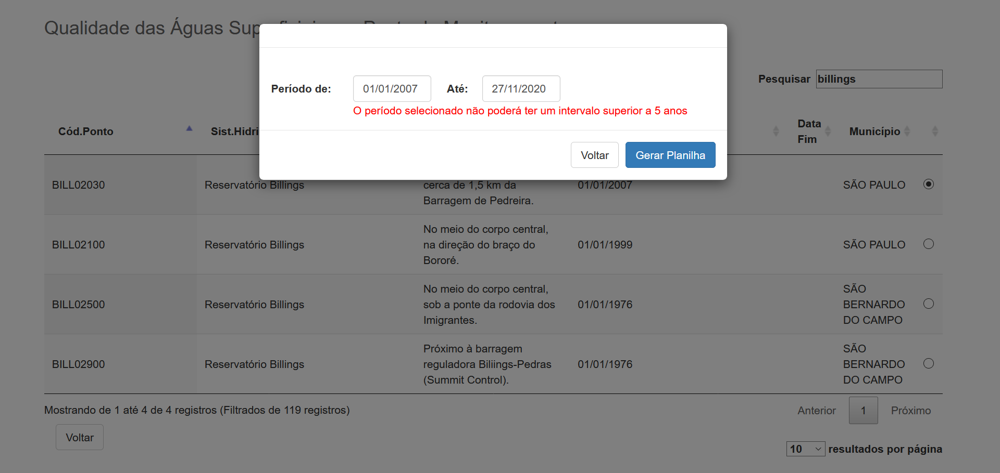
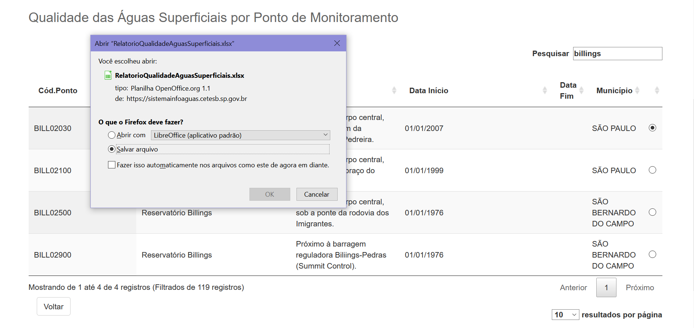
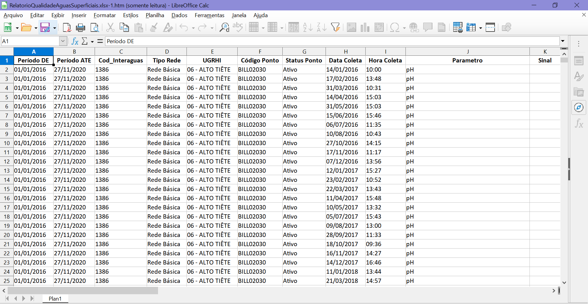

Trabalho final para o curso ‘Web Scraping’.
Beatriz Milz
Acesse o repositório no GitHub
Atualizado em 28 de novembro de 2020.
Contextualização
Boas vindas! Esta página corresponde ao trabalho final para o curso Web Scraping, oferecido pela Curso-R e ministrado por Julio Trecenti e Caio Lente. O objetivo proposto para o trabalho final é construir um produto de dados que utilize Web Scraping.
Introdução
O monitoramento ambiental é, segundo a Empresa Brasileira de Pesquisa Agropecuária (EMBRAPA), “um processo de coleta de dados, estudo e acompanhamento contínuo e sistemático das variáveis ambientais, com o objetivo de identificar e avaliar - qualitativa e quantitativamente - as condições dos recursos naturais em um determinado momento, assim como as tendências ao longo do tempo”.
A coleta de dados ambientais é representada na figura a seguir como a primeira etapa em um workflow de Ciência de Dados Ambientais (tradução do chamado de Environmental Data Science por Horst). A etapa de coleta de dados é muito importante, abrangendo diferentes tecnologias: por sensoriamento remoto, através de estações meteorológicas automáticas, coletas in situ, entre outros.

Figura: Versão expandida do ciclo da Ciência de dados, por Wickham and Grolemund (2017). Fonte: Ilustração por Allison Horst.
A coleta de amostras de águas superficiais é realizado in situ, ou seja, no local. Essas coletas e a posterior análise em laboratório das amostras são custosas para serem realizadas: requerem uma equipe para coletar e analisar as amostras, barcos para acessar os pontos, materiais e equipamentos, entre outros. Tanto a coleta quanto a análise das amostras de águas superficiais requerem critérios e metodologias específicas (é possível saber mais neste guia).
A Companhia Ambiental do Estado de São Paulo (CETESB) é a agência ambiental responsável pelo desenvolvimento de ações de controle, licenciamento, fiscalização e monitoramento das atividades potencialmente poluidoras no Estado de São Paulo*. Essa agência realiza o monitoramento da qualidade das águas das praias, rios, represas, do ar e do solo no Estado de São Paulo.
Os dados referentes ao monitoramento da qualidade do ar são disponibilizados no sistema Qualar, e o sistema Infoaguas disponibiliza dados referentes à qualidade da água. Entretanto, não existe uma API (Application Programming Interface) pública para acesso dessas informações, e ambos os sistemas foram elaborados de forma que obter informações para um amplo recorte espacial e temporal seja trabalhoso, requerendo bastante trabalho manual.
O pacote Rpollution, desenvolvido por Amorim (2020), disponibiliza funções para obter os dados do sistema Qualar utilizando a linguagem de programação R e técnicas de Web Scraping. Entretanto, não foi encontrado alguma ferramenta similar para obtenção dos dados disponibilizados no sistema Infoaguas. Esses dados são importantes para acompanhar a situação de qualidade dos principais mananciais de abastecimento público do Estado de São Paulo*.
Segundo os dados disponibilizados no sistema Infoaguas, atualmente existem 562 pontos de coleta ativos no Estado de São Paulo.
Portanto, o objetivo deste trabalho foi desenvolver funções que possibilitem acessar os dados disponibilizados no sistema Infoaguas para Águas Superficiais, para que pessoas pesquisadoras, jornalistas, e outras interessadas possam ter acesso à estes dados de forma automatizada. Ao final, para exemplificar o uso dos dados obtidos, uma breve análise descritiva será realizada com os dados de qualidade da água no território da Macrometrópole Paulista.
Pacotes utilizados
Nas funções desenvolvidas neste trabalho, foram usados dos seguintes pacotes: abjutils (Lente and Trecenti 2020), dplyr (Wickham et al. 2020), glue (Hester 2020), httr (Wickham 2020a), janitor (Firke 2020), lubridate (Spinu, Grolemund, and Wickham 2020), magrittr (Bache and Wickham 2014), progressr (Bengtsson 2020), purrr (Henry and Wickham 2020), readr (Wickham and Hester 2020), rvest (Wickham 2020b), stringr (Wickham 2019), tibble (Müller and Wickham 2020), e xml2 (Wickham, Hester, and Ooms 2020).
Além destes, para a elaboração deste relatório também foi utilizado os pacotes DT (Xie, Cheng, and Tan 2020), geobr (Pereira and Goncalves 2020), knitr (Xie 2020), learnr (Schloerke, Allaire, and Borges 2020), readxl (Wickham and Bryan 2019), rmarkdown (Allaire et al. 2020), sf (Pebesma 2020), e usethis (Wickham and Bryan 2020).
Acessando os dados
Para demonstrar como funciona o acesso manual no sistema Infoaguas, a seguir estão algumas screenshots que demonstram o fluxo de navegação no site até que seja possível obter os dados.
- Ao acessar o Sistema INFOAGUAS (através do link https://sistemainfoaguas.cetesb.sp.gov.br/ ), é solicitado a autenticação através de login e senha. Caso não tenha um cadastro, é possível realizar através do botão “Novo Usuário”.

- Após a autenticação, o site direciona para uma página de boas vindas. Para acessar os dados referentes à Águas Superficiais (como rios e reservatórios), é necessário clicar em: “Águas Superficiais > Consultas e Relatórios > Qualidade das Águas Superficiais”.
- O site direciona para uma página com um formulário de pesquisa, onde é possível fazer a pesquisa:
- Por ponto de monitoramento
- Por parâmetro.
Neste mesmo formlário, é possível filtrar por: - Todos (sem filtro) - UGRHI (Unidade de Gerenciamento de Recursos Hídricos. Por exemplo: Alto Tietê) - Sistema Hídrico (por exemplo: Represa Billings) - Município
Neste exemplo realizaremos a pesquisa por ponto de monitoramento, e por UGRHI, escolhendo Alto Tietê.

- Após clicar em “Buscar” o site direciona para uma página com uma tabela contendo informações sobre os pontos de monitoramento. É uma tabela interativa (feita com DataTables), onde há um campo que possibilita pesquisar algum termo na tabela.
 5. Neste exemplo, a pesquisa foi feita com o termo ‘Billings’, para buscar pontos de monitoramento no Reservatório Billings, resultando em 4 pontos.
5. Neste exemplo, a pesquisa foi feita com o termo ‘Billings’, para buscar pontos de monitoramento no Reservatório Billings, resultando em 4 pontos.

- Ao selecionar o botão (radio button) correspondente ao ponto de monitoramento, é solicitado informar o período da consulta, preenchendo a data inicial e a data final.
Importante destacar que o formulário limita este período para um intervalo de tempo de até 5 anos, o que implica que a obtenção de todos os dados disponíveis para a Represa Billings manualmente necessitaria que a pesquisa fosse feita 26 vezes!

- Após informar um período válido, aparece uma caixa onde é possível realizar o download da base de dados em formato
.xlsx.

Exemplo do arquivo obtido:

A base de dados disponibilizada neste exemplo apresenta medições referentes à diversos parâmetros (porém na base completa existem mais parâmetros):
| Tipo de parâmetro | Parâmetros |
|---|---|
| 1- Campo | Chuvas nas últimas 24h, Coloração, Profundidade da Coleta, e Temperatura do Ar |
| 2- Físicos | Condutividade, Sólido Dissolvido Total, Sólido Suspenso Total, Sólido Total, Temperatura da Água, Transparência, e Turbidez |
| 3- Químicos | Alumínio Dissolvido, Alumínio Total, Arsênio Total, Bário Total, Cádmio Total, Cálcio Total, Carbono Orgânico Dissolvido, Carbono Orgânico Total, Chumbo Total, Cloreto Total, Cobre Dissolvido, Cobre Total, Crômio Total, DBO (5, 20), Dureza, Fenóis Totais, Ferro Dissolvido, Ferro Total, Fluoreto Total, Fósforo-Ortofosfato, Fósforo Total, Magnésio Total, Manganês Total, Mercúrio Total, Microcistinas, Níquel Total, Nitrogênio-Nitrato, Nitrogênio-Nitrito, Nitrogênio Amoniacal, Nitrogênio Kjeldahl, Nitrogênio Total, Oxigênio Dissolvido, pH, Potássio, Sódio, Subst. Tensoat. reagem c/ Azul Metileno, Sulfato Total, e Zinco Total |
| 4- Microbiológicos | Escherichia coli** |
| 5- Hidrobiológicos | Clorofila-a, Feofitina-a, e Número de Células de Cianobactérias |
| 6- Ecotoxicológicos | Ens. Ecotoxic. C/ Ceriodaphnia dubiae Ens. Ecotoxic. c/ Vibrio fischeri |
| 7- Testes de Mutagenicidade | Ensaio de micronúcleos in vitro |
| 8- Teste de Ames | TA98 - S9e TA98 + S9 |
Funções desenvolvidas
A seguir, apresento uma breve descrição das funções desenvolvidas neste trabalho.
Autenticação no sistema
O sistema InfoÁguas solicita login para acessar os dados. Portanto, primeiramente é necessário realizar a autentição.
A função login_infoaguas() tem como argumentos o email (login) e a senha (password), e realiza a autenticação no sistema Infoaguas através de uma requisição do tipo POST.
login_infoaguas(login = ... ,
password = ...)Obter pontos de coleta
Para possibilitar a realização das buscas de resultados de parâmetros para os pontos de monitoramento, é necessário ter informações sobre os pontos de monitoramento. A função get_sampling_points() realiza um Web Scraping e retorna uma base contendo informações sobre os pontos. Obs: Essa base será descrita posteriormente. Não é necessário informar argumentos para essa função.
get_sampling_points() Buscar dados de qualidade da água
Para buscar os dados, foram desenvolvidas duas funções principais:
get_results(): tem como argumento osampling_point(o número utilizado no sistema para se referir ao ponto de coleta), e opath(um diretório onde os arquivos baixados serão salvos).
get_results(sampling_point = ... , path = "..../")get_all_results(): tem como argumentopoints, sendo um vetor contendo os pontos de coleta a qual deseja obter os dados, e opath(um diretório onde os arquivos baixados serão salvos). Internamente, essa função utiliza a funçãoget_results()(descrita anteriormente).
get_all_results(points = ... , path = "..../")Arrumar as bases
A última função desenvolvida se chama tidy_infoaguas(), e tem como argumento o path, sendo o diretório onde os arquivos foram salvos ao executar a função anterior. Essa função irá buscar todos os arquivos .xlsx neste diretório, irá ler os dados, e realizar algumas operações para limpar a base. A função retorna a base de dados arrumada.
tidy_infoaguas(path = "..../")Bases de dados obtidas
Pontos de coleta
A primeira base obtida é a dos pontos de coleta. Possui as seguintes variáveis:
cod_ponto: código do ponto de coleta apresentado no sistema Infoaguas.sist_hidrico: sistema hídrico onde o ponto está localizado.localização: texto que descreve onde o ponto de coleta está localizado.data_inicioedata_fim: data de início e de fim da operação deste ponto de coleta. Na variáveldata_fim,NArepresenta um ponto de coleta que ainda está ativo.municipioemuni: os dois correspondem ao nome do município onde o ponto está localizado.code_muni: código do município segundo o IBGE.cod_interaguas: código utilizado internamente no sistema, necessário para realizar as pesquisas.
DT::datatable(sampling_points)Dados de qualidade da água
A base obtida utilizando as funções desenvolvidas neste trabalho apresenta dados para todos os pontos de monitoramento, para todos os parâmetros, em todo o período de operação. Por este motivo, a base tem quase 2 milhões de linhas.
Para não sobrecarregar o relatório, será apresentado uma tabela de exemplo conendo apenas os dados referentes à Represa Billings. Exemplo da busca:
# Autenticar
infoaguas::login_infoaguas(login = Sys.getenv("CETESB_LOGIN"),
password = Sys.getenv("CETESB_PWD"))
# Definir os pontos para obter os dados
codigos <-
sampling_points %>%
dplyr::filter(sist_hidrico == "Reservatório Billings") %>%
dplyr::pull(cod_interaguas)
# Definir o diretório onde serão salvos os arquivos
path_billings <- "billings/"
# Obter os arquivos em excel com dados para cada ponto
get_all_results(codigos, path_billings)
# Organizar todos os excel em uma base arrumada
dados_billings <- tidy_infoaguas(path_billings)
# Salvar esses dados em um csv
readr::write_csv2(dados_billings, "dados_billings.csv")A base de exemplo, contendo apenas os dados referentes à Represa Billings, possui cerca de 35 mil observações e 28 variáveis.
DT::datatable(head(dados_billings))Análise descritiva dos dados
Em breve!
Conclusões
Próximos passos/ Melhorias sugeridas
Não consegui utilizar o pacote furrr na função
get_all_results(). Seria interessante corrigir isso pois deixaria a função mais rápida.Padronizar nome das funções, argumentos, variáveis etc em um único idioma. Alguns escrevi em inglês, outros em português, tá bagunçado.
Documentar as funções!
Pensar em uma forma de disponibilizar para a comunidade.
Desenvolvi funções para obter dados sobre o monitoramento das águas superficiais, porém no sistema existem também uma seção sobre águas subterrâneas. Seria interessante raspar também?
Agradecimentos
Aos professores do curso pelas aulas maravilhosas: Julio Trecenti e Caio Lente.
Post sobre o scraper do QUALAR - Por William Amorim
Para você que leu até aqui!

Referências
Allaire, JJ, Yihui Xie, Jonathan McPherson, Javier Luraschi, Kevin Ushey, Aron Atkins, Hadley Wickham, Joe Cheng, Winston Chang, and Richard Iannone. 2020. Rmarkdown: Dynamic Documents for R. https://github.com/rstudio/rmarkdown.
Amorim, William. 2020. Rpollution: Functions for Air Pollution Analysis.
Bache, Stefan Milton, and Hadley Wickham. 2014. Magrittr: A Forward-Pipe Operator for R. https://CRAN.R-project.org/package=magrittr.
Bengtsson, Henrik. 2020. Progressr: A Inclusive, Unifying Api for Progress Updates. https://github.com/HenrikBengtsson/progressr.
Firke, Sam. 2020. Janitor: Simple Tools for Examining and Cleaning Dirty Data. https://github.com/sfirke/janitor.
Henry, Lionel, and Hadley Wickham. 2020. Purrr: Functional Programming Tools. https://CRAN.R-project.org/package=purrr.
Hester, Jim. 2020. Glue: Interpreted String Literals. https://CRAN.R-project.org/package=glue.
Lente, Caio, and Julio Trecenti. 2020. Abjutils: Useful Tools for Jurimetrical Analysis Used by the Brazilian Jurimetrics Association. https://github.com/abjur/abjutils.
Müller, Kirill, and Hadley Wickham. 2020. Tibble: Simple Data Frames. https://CRAN.R-project.org/package=tibble.
Pebesma, Edzer. 2020. Sf: Simple Features for R. https://CRAN.R-project.org/package=sf.
Pereira, Rafael H. M., and Caio Nogueira Goncalves. 2020. Geobr: Loads Shapefiles of Official Spatial Data Sets of Brazil. https://github.com/ipeaGIT/geobr.
Schloerke, Barret, JJ Allaire, and Barbara Borges. 2020. Learnr: Interactive Tutorials for R. https://CRAN.R-project.org/package=learnr.
Spinu, Vitalie, Garrett Grolemund, and Hadley Wickham. 2020. Lubridate: Make Dealing with Dates a Little Easier. https://CRAN.R-project.org/package=lubridate.
Wickham, Hadley. 2019. Stringr: Simple, Consistent Wrappers for Common String Operations. https://CRAN.R-project.org/package=stringr.
———. 2020a. Httr: Tools for Working with Urls and Http. https://CRAN.R-project.org/package=httr.
———. 2020b. Rvest: Easily Harvest (Scrape) Web Pages. https://CRAN.R-project.org/package=rvest.
Wickham, Hadley, and Jennifer Bryan. 2019. Readxl: Read Excel Files. https://CRAN.R-project.org/package=readxl.
———. 2020. Usethis: Automate Package and Project Setup. https://CRAN.R-project.org/package=usethis.
Wickham, Hadley, Romain François, Lionel Henry, and Kirill Müller. 2020. Dplyr: A Grammar of Data Manipulation. https://CRAN.R-project.org/package=dplyr.
Wickham, Hadley, and Garrett Grolemund. 2017. R for Data Science: Import, Tidy, Transform, Visualize, and Model Data. O’Reilly Media.
Wickham, Hadley, and Jim Hester. 2020. Readr: Read Rectangular Text Data. https://CRAN.R-project.org/package=readr.
Wickham, Hadley, Jim Hester, and Jeroen Ooms. 2020. Xml2: Parse Xml. https://CRAN.R-project.org/package=xml2.
Xie, Yihui. 2020. Knitr: A General-Purpose Package for Dynamic Report Generation in R. https://yihui.org/knitr/.
Xie, Yihui, Joe Cheng, and Xianying Tan. 2020. DT: A Wrapper of the Javascript Library Datatables. https://github.com/rstudio/DT.